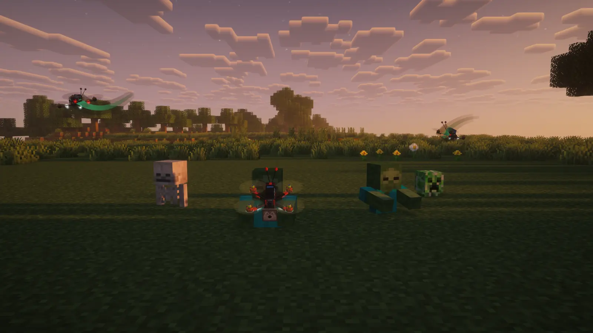

Add-onsOfficial add-onOffizielles Add-on
Propwash: Mob Defense
Your drone has a dispenser now. Mob Defense adds three accessories for Propwash FPV drones: a dispenser mount in front that fires arrows, potions, wind charges and TNT, a spear mount below that hits mobs in passing, and a rocket booster on top for an elytra-style boost. And the mobs fight back: zombies come closer, skeletons shoot, phantoms hunt.
Deine Drohne hat jetzt einen Dispenser. Mob Defense bringt drei Zubehörteile für Drohnen von Propwash FPV: vorn eine Dispenser-Halterung, die Pfeile, Tränke, Windkugeln und TNT abfeuert, unten eine Speer-Halterung, die Mobs im Vorbeiflug trifft, und oben einen Raketen-Booster für einen Schub wie mit Elytren. Und die Mobs wehren sich: Zombies kommen näher, Skelette schießen, Phantome jagen.

- Version
- 1.0.0
- NeedsBraucht
- Propwash 0.6.0 or newerPropwash 0.6.0 oder neuer
- Minecraft
- 26.3 · Fabric · NeoForge
- PartsTeile
- 3 (3 accessoriesZubehörteile)
- LicenseLizenz
- PolyForm Shield 1.0.0
Play Propwash with others on the community server mc.propwashfpv.com, with Fabric or NeoForge.Spiel Propwash mit anderen auf dem Community-Server mc.propwashfpv.com, mit Fabric oder NeoForge. About the serverZum Server
The three accessoriesDie drei Zubehörteile
- Dispenser Mount (front): four slots, and it always fires straight ahead: arrows, splash and lingering potions, wind charges, fire charges, TNT and everything else a vanilla dispenser can.
- Dispenser-Halterung (vorn): vier Slots, und sie feuert immer geradeaus: Pfeile, Wurf- und Verweiltränke, Windkugeln, Feuerkugeln, TNT und alles andere, was ein Vanilla-Dispenser kann.
- Spear Mount (bottom): one spear, from wooden to netherite. It hits by itself from 4.6 m/s with vanilla spear damage.
- Speer-Halterung (unten): ein Speer, von Holz bis Netherit. Er trifft von selbst ab 4,6 m/s mit dem Schaden eines Vanilla-Speers.
- Rocket Booster (top): one firework rocket gives 2 g along the nose for 1.25 to 2.25 s, like with elytra.
- Raketen-Booster (oben): Eine Feuerwerksrakete gibt 2 g entlang der Nase für 1,25 bis 2,25 s, wie bei Elytren.
- Real weight and recoil: every part and every piece of ammo counts. Four potions or four TNT make a 5″ noticeably slower, and a wind charge pushes a cinewhoop back. The smallest frame with a front mount is the 3″ cinewhoop.
- Echtes Gewicht und Rückstoß: Jedes Teil und jede Munition zählt. Vier Tränke oder vier TNT machen einen 5-Zoll spürbar langsamer, und eine Windkugel drückt einen Cinewhoop zurück. Der kleinste Rahmen mit vorderer Halterung ist der 3-Zoll-Cinewhoop.
- Your trigger: fire with Accessory action 1, best on a button of your radio (Keypad 9 on the keyboard). Accessory action 2 picks the next slot, Accessory action 3 ignites the booster. The OSD shows slot, ammo and warnings like DSP 2 ARW 12, RKT RDY or THREAT.
- Dein Auslöser: Feuern mit Zubehör-Aktion 1, am besten auf einem Taster deiner Funke (Ziffernblock 9 auf der Tastatur). Zubehör-Aktion 2 wählt den nächsten Slot, Zubehör-Aktion 3 zündet den Booster. Das OSD zeigt Slot, Munition und Warnungen wie DSP 2 ARW 12, RKT RDY oder THREAT.
Getting startedErste Schritte
- Put Mob Defense next to Propwash FPV 0.6.0 into the mods folder (Fabric or NeoForge), on the server and on every client.Leg Mob Defense neben Propwash FPV 0.6.0 in den Ordner mods (Fabric oder NeoForge), auf dem Server und auf jedem Client.
- Take the three parts from the add-on’s creative tab, or craft them. The recipes unlock as soon as you have one of the ingredients.Nimm die drei Teile aus dem Kreativ-Tab des Add-ons, oder stell sie her. Die Rezepte schalten sich frei, sobald du eine der Zutaten hast.
- Build them on at Propwash’s Drone Workbench: dispenser in front, spear below, booster on top.Bau sie an der Drohnen-Werkbank von Propwash an: Dispenser vorn, Speer unten, Booster oben.
- Place the drone, sneak and right-click it and press Accessories in the service menu. Load ammunition, a spear and one firework rocket.Stell die Drohne ab, klick sie schleichend an und drück im Wartungsmenü auf Zubehör. Lade Munition, einen Speer und eine Feuerwerksrakete.
- Fly as usual and fire with Accessory action 1.Flieg wie gewohnt und feuere mit Zubehör-Aktion 1.
Three Flight School chapters explain the parts: hold M over one of them. Four advancements wait in their own tab Mob Defense.
Drei Kapitel der Flugschule erklären die Teile: Halt M über eins davon. Vier Fortschritte warten in ihrem eigenen Tab Mob Defense.
The mobs fight backDie Mobs wehren sich
Every hostile vanilla mob reacts to armed drones in its own way, within 24 blocks by default. Parked drones are left alone, and a mob that is after a player stays on the player unless your drone is much closer. While a mob goes after your drone, the OSD shows THREAT. Data packs and other mods can add their mobs with entity tags.
Jeder feindliche Vanilla-Mob reagiert auf seine eigene Weise auf scharfe Drohnen, standardmäßig im Umkreis von 24 Blöcken. Abgestellte Drohnen bleiben in Ruhe, und ein Mob, der hinter einem Spieler her ist, bleibt beim Spieler, außer deine Drohne ist viel näher. Solange ein Mob deine Drohne angreift, zeigt das OSD THREAT. Datenpakete und andere Mods können ihre Mobs mit Entity-Tags dazunehmen.
| KindArt | Mob | ReactionReaktion |
|---|---|---|
| ChaseVerfolger | Zombie, Husk, Drowned, Zombie VillagerZombie, Wüstenzombie, Ertrunkener, Zombiedorfbewohner | lured by the drone, run under it and strike when it is at most 2.5 blocks above their head or has landedwerden von der Drohne angelockt, laufen darunter und schlagen zu, wenn sie höchstens 2,5 Blöcke über ihrem Kopf ist oder gelandet ist |
| BruteSchläger | Vindicator, Piglin Brute, Ravager, Hoglin, Zoglin, Wither Skeleton, angry Zombified PiglinDiener, Piglin-Barbar, Verwüster, Hoglin, Zoglin, Witherskelett, wütender Zombifizierter Piglin | like the chasers; the Ravager roars the drone away, Hoglin and Zoglin toss it upwardswie die Verfolger; der Verwüster brüllt die Drohne weg, Hoglin und Zoglin werfen sie nach oben |
| ArcherSchützen | Skeleton, Stray, Bogged, Pillager, Piglin with crossbow and moreSkelett, Eiswanderer, Sumpfskelett, Plünderer, Piglin mit Armbrust und weitere | stop, lead the drone and shoot, 4 to 24 blocks away with line of sightbleiben stehen, halten vor und schießen, 4 bis 24 Blöcke weit mit Sichtlinie |
| FireFeuer | Blaze, GhastLohe, Ghast | small fire charges up to 16 blocks, a big fireball up to 64 blocks whose blast pushes the dronekleine Feuerkugeln bis 16 Blöcke, ein großer Feuerball bis 64 Blöcke, dessen Explosion die Drohne wegdrückt |
| Wind | BreezeBöe | wind charges up to 16 blocks push the drone awayWindkugeln bis 16 Blöcke drücken die Drohne weg |
| BulletGeschoss | Shulker | bullets that follow the drone; a hit makes it float up for 10 secondsGeschosse, die der Drohne folgen; ein Treffer lässt sie 10 Sekunden lang aufsteigen |
| FlyerFlieger | Phantom, VexPhantom, Plagegeist | hunt the drone in the air; phantoms circle and swoopjagen die Drohne in der Luft; Phantome kreisen und stoßen herab |
| Creeper | Creeper | walks under a drone flying at most 4 blocks high and ignitesläuft unter eine Drohne, die höchstens 4 Blöcke hoch fliegt, und zündet |
| StareBlick | Enderman, CreakingEnderman, Knarz | the Enderman gets angry when your FPV camera looks it in the face; the creaking freezes under the camera’s gazeder Enderman wird wütend, wenn deine FPV-Kamera ihm ins Gesicht sieht; der Knarz erstarrt unter dem Blick der Kamera |
| Boss | Wither | wither skulls at drones up to 32 blocks awayWitherschädel auf Drohnen bis 32 Blöcke weit |
Other hostile mobs, also from other mods, attack drones that have landed or hover at most 1 block high. The Ender Dragon and the Warden ignore the add-on’s reactions; Propwash’s own world rule Bosses fight drones decides about them.
Andere feindliche Mobs, auch aus anderen Mods, greifen Drohnen an, die gelandet sind oder höchstens 1 Block hoch schweben. Enderdrache und Wärter ignorieren die Reaktionen des Add-ons; über sie entscheidet die Welt-Regel Bosse kämpfen gegen Drohnen von Propwash.
World rulesWelt-Regeln
In Propwash’s configurator (K), tab World rules, section Mob Defense. In singleplayer you change them yourself, on a server the operators do. Each rule is also a gamerule: /gamerule mobdefense:<id> <value>.
Im Konfigurator von Propwash (K), Tab Welt-Regeln, Abschnitt Mob Defense. Im Einzelspieler änderst du sie selbst, auf einem Server die Operatoren. Jede Regel ist auch eine Gamerule: /gamerule mobdefense:<id> <wert>.
| World ruleWelt-Regel | Id | DefaultStandard | RangeBereich |
|---|---|---|---|
| Mobs react to dronesMobs reagieren auf Drohnen | mobdefense:mobs_react_to_drones | onan | on or offan oder aus |
| Mob reaction rangeReichweite der Mobs | mobdefense:mob_reaction_range | 24 | 8 to 648 bis 64 |
| Mob damage to dronesSchaden durch Mobs an Drohnen | mobdefense:mob_damage_to_drones_percent | 100 % | 0 to 400 %0 bis 400 % |
| Payloads hit playersPayloads treffen Spieler | mobdefense:payloads_hit_players | offaus | on or offan oder aus |
| TNT from the dispenserTNT aus dem Dispenser | mobdefense:allow_tnt | onan | on or offan oder aus |
| Drone griefingGriefing durch Drohnen | mobdefense:drone_griefing | onan | on or offan oder aus |
| Fluid buckets from the dispenserEimer mit Flüssigkeit aus dem Dispenser | mobdefense:allow_fluid_buckets | offaus | on or offan oder aus |
| Real ammoEchte Munition | mobdefense:real_ammo | onan | on or offan oder aus |
| Dispenser cooldown (ticks)Abklingzeit des Dispensers (Ticks) | mobdefense:dispenser_cooldown_ticks | 4 | 0 to 1000 bis 100 |
| Spear damageSpeerschaden | mobdefense:spear_damage_percent | 100 % | 0 to 100 %0 bis 100 % |
The server decides every shot. Spawn protection, adventure mode and vanilla PvP are respected, and healing potions always heal, so you can fly air support for your teammates.
Der Server entscheidet über jeden Schuss. Spawn-Schutz, Abenteuermodus und Vanilla-PvP gelten, und Heiltränke heilen immer, du kannst also deinen Mitspielern aus der Luft helfen.
FAQHäufige Fragen
Why doesn’t right-click fire?Warum feuert der Rechtsklick nicht?
In Propwash the right-click always ends the flight, with every drone. That keeps the exit the same everywhere and your hands on the radio. Fire with Accessory action 1, best on a button of your radio.
In Propwash beendet der Rechtsklick immer den Flug, bei jeder Drohne. So bleibt der Ausstieg überall gleich und deine Hände bleiben an der Funke. Feuere mit Zubehör-Aktion 1, am besten auf einem Taster deiner Funke.
Can I hit other players?Kann ich andere Spieler treffen?
Only if the server allows it: the world rule Payloads hit players and vanilla PvP must both be on. Healing and other positive potions always work.
Nur wenn der Server es erlaubt: Die Welt-Regel Payloads treffen Spieler und Vanilla-PvP müssen beide an sein. Heiltränke und andere positive Tränke wirken immer.
Why are buckets locked?Warum sind Eimer gesperrt?
So nobody builds water or lava columns in the air. Empty buckets still scoop, and server owners can allow fluid buckets with the world rule Fluid buckets from the dispenser.
Damit niemand Wasser- oder Lavasäulen in die Luft baut. Leere Eimer schöpfen weiter, und Server-Betreiber können Eimer mit Flüssigkeit mit der Welt-Regel Eimer mit Flüssigkeit aus dem Dispenser erlauben.
My drone doesn’t take off any more.Meine Drohne hebt nicht mehr ab.
Your load is too heavy. Ammunition counts with its real weight, and TNT (600 g each) and potions (350 g each) add up quickly. Take fewer, or use a bigger drone.
Deine Ladung ist zu schwer. Munition zählt mit ihrem echten Gewicht, und TNT (je 600 g) und Tränke (je 350 g) summieren sich schnell. Nimm weniger mit, oder nimm eine größere Drohne.
Mobs ignore my drone.Mobs ignorieren meine Drohne.
Check the world rule Mobs react to drones (the preset Training turns it off), the reaction range and whether the drone is armed: parked drones and drones that are not armed are left alone.
Prüf die Welt-Regel Mobs reagieren auf Drohnen (die Voreinstellung Training schaltet sie aus), die Reichweite und ob die Drohne scharf ist: Abgestellte und nicht scharfe Drohnen bleiben in Ruhe.
Versions and serversVersionen und Server
- Mob Defense 1.0.0 needs Propwash 0.6.0 or newer, on Fabric or NeoForge, on the server and on every client. A player without it gets Propwash’s join message with its name and version instead of an error.
- Mob Defense 1.0.0 braucht Propwash ab 0.6.0, auf Fabric oder NeoForge, auf dem Server und auf jedem Client. Ein Spieler ohne das Add-on bekommt beim Beitreten die Meldung von Propwash mit Name und Version statt eines Fehlers.
- Works with Just More Parts: every frame with a front mount carries the dispenser. Works with Camera Drones: both use the front mount, so a drone carries either a gimbal or the dispenser mount.
- Läuft zusammen mit Just More Parts: Jeder Rahmen mit vorderer Halterung trägt den Dispenser. Läuft zusammen mit Camera Drones: Beide nutzen die vordere Halterung, eine Drohne trägt also entweder ein Gimbal oder die Dispenser-Halterung.
- The three parts travel in Propwash’s share codes; ammunition doesn’t. Worlds stay intact without the add-on: Propwash keeps the parts as placeholders, and everything is back when Mob Defense is installed again.
- Die drei Teile reisen in den Sharecodes von Propwash mit, Munition nicht. Welten bleiben ohne das Add-on heil: Propwash behält die Teile als Platzhalter, und alles ist wieder da, wenn Mob Defense wieder installiert ist.
All partsAlle Teile
AccessoriesZubehör 3
- Dispenser MountDispenser-Halterung
- Spear MountSpeer-Halterung
- Rocket BoosterRaketen-Booster
License and source codeLizenz und Quellcode
Mob Defense is source-available under the PolyForm Shield License 1.0.0 with additional permissions, like Propwash FPV: modpacks may include the unchanged release files, and an exit clause makes the code MIT licensed after 12 months without a release or maintainer activity. The documentation is MIT licensed. What the licenses allow, in plain words.
Mob Defense ist wie Propwash FPV source-available, unter der PolyForm Shield License 1.0.0 mit Zusatzerlaubnissen: Modpacks dürfen die unveränderten Release-Dateien enthalten, und eine Ausstiegsklausel stellt den Code unter MIT, wenn es 12 Monate lang kein Release und keine Aktivität des Maintainers gibt. Die Doku steht unter der MIT-Lizenz. Was die Lizenzen erlauben, in klaren Worten.